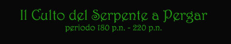

A
Pergar dalla caduta dell’impero di Nordor il Culto del Serpente si è
dimostrato un culto vincente. Il tanatanesimo, espressione religiosa massima del
Regno di Tarsis e dei Ducati, in lotta ideologica (da sempre) con i Valérian è
stato abolito e non riconosciuto come religione ammessa all'interno del
Granducato.
La Struttura del Culto del Serpente a Pergar
Il Culto del Serpente di Pergar, nonostante mantenga la tipica struttura settaria e ristretta (la percentuale di fedeli sul totale degli abitanti non supera il 15%) essendo stato istituzionalizzato si è organizzato sul territorio divenendo come un autonomo potere dello stato. La gestione del Culto è sempre rimasta nelle mani dei Grandi Sacerdoti e le lotte intestine hanno sempre unicamente riguardato i posti di comando inferiori dei chierici. Del resto il Concilio delle Vesti Rosse, restando numericamente molto ristretto (non hanno mai superato la decina), è sempre risultato fortemente legato al Grande Sacerdote garantendone l'assoluta egemonia secondo i dettami della fede.
Il Tempio Supremo del Serpente di Pergar e gli altri Templi del Veleno
Il
luogo sacro per eccellenza è costruito su una delle colline di Pergar. E' il
più grande tempio, direttamente gestito dal Grande Sacerdote e ad esso sono
affiliate obbligatoriamente tutte le vesti rosse, oltre a tutte le vesti nere e
azzurre della città di Pergar. Negli altri centri abitati del Granducato sono
presenti altri Templi del Veleno satelliti ognuno dei quali è gestito da un
Adepto del Veleno Sacro. Si tratta di otto Templi del Veleno, tre dei quali sono
considerati maggiori essendo di grandi dimensioni e di rilevante importanza (Tempio Veleno di Imian,
Tempio del Veleno di Simiar,
Tempio del Veleno di Mirgan)
mentre altri cinque templi sono considerati minori (Tempio
del Veleno dell’Ultima Rocca,
Tempio del Veleno del Corvo Nero
| Adepto del Veleno Sacro delle Vesti Azzurre presso il Tempio Supremo di Pergar | 25.000 karsi/anno |
| Adepto del Veleno Sacro delle Vesti Nere presso il Tempio Supremo di Pergar | 22.500 karsi/anno |
I Templi del Serpente e le loro vesti
I Templi del Veleno attualmente esistenti e dipendenti dal Tempio Supremo di Pergar sono in ordine di importanza i seguenti (con l'indicazione delle vesti iscritte come affiliate a questi templi).
|
TEMPIO DEL VELENO |
Vesti Nere | Vesti Nere Agiate | Vesti Azzurre |
| Tempio Supremo di Pergar | 2650 | 650 | 100 + 9 vesti rosse |
| Tempio Veleno di Imian | 680 | 120 | 24 |
| Tempio del Veleno di Simiar | 425 | 75 | 15 |
| Tempio del Veleno di Mirgan | 320 | 55 | 11 |
| Tempio del Veleno dell’Ultima Rocca | 170 | 30 | 6 |
|
Tempio del Veleno del Corvo Nero |
160 | 30 | 5 |
| Tempio del Veleno della Rocca di Arlos | 115 | 20 | 4 |
| Tempio
del Veleno del Villaggio Boschivo |
102 | 18 | 3 |
| Tempio
del Veleno di Base Vittoria |
64 | 11 | 2 |
La Carriera dei Chierici del Serpente
Figli del Serpente: I chierici del Serpente appena raggiungono il primo livello sono immediatamente nominati con il titolo Figli del Serpente. Costoro aiutano nello svolgimento delle mansioni basi dei Templi a cui sono affidati e spesso sono inviati in Templi del Veleno satelliti minori dove possono, nella provincia, esercitare il loro ruolo clericale e dedicarsi allo stesso tempo ad accrescere la loro esperienza.
Adepti del Veleno: Una volta raggiunto il terzo livello di esperienza i Figli del Serpente sono nominati di diritto Adepti del Veleno consacrando definitivamente il loro ruolo di ministri del Culto. A costoro vengono affidati incarichi più rilevanti dal Gran Sacerdote che li utilizza per svolgere missioni e adempimenti nel nome del Serpente.
Adepti del
Veleno Sacro:
Il passaggio fondamentale a cui tutti i chierici aspirano è quello della
consacrazione con l'affidamento della gestione di un tempio satellite. Si tratta
di un ruolo di comando che garantisce per legge il titolo di sublimi. Gli Adepti
del Veleno Sacro sono personaggi rispettati e temuti, che amministrano templi
accrescendo il loro potere personale, politico e finanziario. Le nomine a questo
ruolo avvengono ad inizio anno e solo quando un posto al comando di uno dei
Templi del Veleno minore si libera (ad es. se il precedente Adepto del Veleno
Sacro muore, o si trasferisce ad altro incarico).
Quando un Adepto
del Veleno raggiunge il 5° livello di esperienza
ha il 30% ogni
anno di essere
nominato alla gestione di un Tempio del Veleno minore. Per ogni livello di
esperienza superiore questa possibilità aumenta del 5% (le stesse percentuali si applicano ad un personaggio appena creato di almeno 5° livello per verificare
se abbia già tale incarico). Questo tiro può essere ripetuto ogni anno senza
alcun ulteriore modificatore. Se il tiro ha successo si seleziona a sorte il
Tempio del Veleno minore che sarà gestito dal chierico. Un chierico che
gestisce un tempio minore può chiedere, ogni anno, al Gran Sacerdote di essere
trasferito. Deve quindi ripetere
lo stesso tiro ogni anno per verificare se il Gran Sacerdote modifica la sua
assegnazione. Se questo tiro ha successo si selezionerà a sorte uno degli altri
Templi del Veleno minore al quale il chierico sarà stato trasferito (e dovrà
obbligatoriamente recarvisi). In rarissimi casi un Adepto del Veleno può
fondare a sue spese e con il consenso del Gran Sacerdote un nuovo Tempio del
Veleno (con almeno 25 vesti nere affiliate), il Tempio deve rispondere ai
requisiti indicati dal Gran Sacerdote e deve essere in ultima istanza
autorizzato con Legge Imperiale che ne sancisce l'extraterritorialità (Il
Tempio del Veleno di Hairan, nella Baronia del Corvo Nero è stato fondato in
questo modo). In questo caso il chierico fondatore diviene di diritto Adepto del
Veleno Sacro del suo Tempio, anche se lo stesso rientra sotto il pieno dominio
del Gran Sacerdote.
Qualora un Adepto
del Veleno Sacro raggiunge il 7° livello di esperienza
ed abbia l'ammontare di Punti Sacri del Serpente richiesti ha il 25% ogni
anno di essere
nominato alla gestione di un Tempio del Veleno maggiore o al Tempio Supremo del
Serpente. Per ogni livello di
esperienza superiore questa possibilità aumenta del 5% (le stesse percentuali
si applicano ad un personaggio appena creato di almeno 7° livello per verificare
se abbia già tale incarico). Questo tiro può essere ripetuto ogni anno senza
alcun ulteriore modificatore. Se il tiro ha successo il chierico potrà
scegliere l'incarico utilizzando l'ammontare di Punti Sacri del Serpente
richiesti (un personaggio appena creato nasce sempre senza Punti Sacri del
Serpente). Il costo in Punti Sacri del Serpente è indicato nella seguente
tabella:
|
INCARICO RICHIESTO |
Punti Sacri richiesti |
| Adepto del Veleno Sacro delle Vesti Azzurre presso il Tempio Supremo di Pergar | 20 |
| Adepto del Veleno Sacro delle Vesti Nere presso il Tempio Supremo di Pergar | 18 |
| Adepto del Veleno Sacro presso il Tempio Veleno di Imian | 16 |
| Adepto del Veleno Sacro presso il Tempio del Veleno di Simiar | 13 |
| Adepto del Veleno Sacro presso il Tempio del Veleno di Mirgan | 10 |
La
Gestione di un Tempio del Veleno
L'Adepti del Veleno Sacro che gestisce il Tempio del Veleno svolge non solo
funzioni religiose ma anche amministrative. Presso ogni Tempio del Veleno esiste
un registro degli affiliati. Si tratta delle vesti nere ed azzurre che seguono
il culto del Serpente presso questo tempio, nonché i chierici ed i combattenti
del serpente che sono stati ivi assegnati. Si noti che in
nessun caso le vesti rosse sono affiliate ad un tempio satellite.
L'Adepto del Veleno Sacro percepisce il contributo delle vesti iscritte al suo
registro ed è suo compito mantenere in buono stato il tempio, occuparsi della
sua difesa, svolgere i riti sacri e nominare le nuove vesti nere.
Svolgimento
della professione clericale presso il Tempio
Per ogni 30
giorni che un chierico del Serpente effettua interamente presso un Tempio,
dedicando tutta la sua giornata alla gestione dei rapporti con i fedeli della
zona (solo l'attività di assistenza, di preparazione e di svolgimento dei riti
è compatibile con questa forma di lavoro), si consideri che potrà vendere
alcuni incantesimi a pagamento ai propri fedeli ed ai non fedeli e che riceverà
donazioni a titolo personale guadagnando un ammontare di denaro lordo
determinato nella tabella (si consideri che la priorità nell'ordine delle
vendite segue la gerarchia):
|
Titolo del Chierico |
Ammontare di guadagno mensile |
| Gran Sacerdote | 1d10 * 25 karsi * livello di esperienza |
| Adepto del Veleno Sacro | 1d8 * 15 karsi * livello di esperienza |
| Adepto del Veleno | 1d6 * 5 karsi * livello di esperienza |
| Figlio del Serpente | 1d3 * 10 karsi |


Le regole del Culto del Serpente di Pergar
Alla
seguente serie di disposizioni del Gran Sacerdote del Tempio Supremo di Pergar
Lindegrad, è stata conferita forza ufficiale da un Supremo Decreto Granducale:
Nessuno
può interrompere un rito del culto del Serpente sia
esso fondamentale o facoltativo. Chi trasgredisce a questa regola
sarà considerato colpevole di reato religioso verso il culto del Serpente.
I
fedeli del serpente siano
essi vesti nere azzurre o rosse, e i chierici del Serpente devono rispettare
totalmente le decisioni del Gran Sacerdote. Tutti coloro che non le
rispetteranno o infrangeranno altra disposizione a carattere religioso saranno
colpevoli di reato religioso e come rei di tale reato saranno dedotti in catene
presso il tempio e li consegnati al Gran Sacerdote o in sua assenza a un Adepto
del Veleno da lui designato.
Ogni
chierico del Culto ha il diritto di controllare se un comune da lui ritenuto una
veste nera, o azzurra, lo sia realmente. Perciò potrà farsi accompagnare da
un qualsiasi Ufficiale della guardia ducale e obbligherà a mostrare il segno di
riconoscimento del Serpente. Qualora si sarà sbagliato (anche nel caso di una
veste rossa) dovrà risarcire a costui una somma pari a 10 karsi di indennizzo.
Le
vesti nere e le vesti azzurre hanno l’obbligo di partecipare ai riti
fondamentali a cui sono invitate
Qualora
le autorità stiano indagando per un presunto reato religioso il Gran Sacerdote
deve essere avvisato e potrà disporre che nelle indagini le autorità vengano
affiancate da un chierico o in mancanza da una veste rossa con funzione di iniziativa
e supervisione.
I
riti si dividono in fondamentali
che sono quelli organizzati dal Gran Sacerdote, e riti facoltativi
che sono quelli che possono organizzare in ogni momento e luogo altri chierici.
Esiste
un calendario di riti fondamentali fissi. Questi riti si tengono presso il
Tempio Supremo sulla Collina del Serpente.
Tutti i chierici a meno che non abbiano un permesso speciale del Gran Sacerdote si devono trovare presso il tempio due giorni prima per i Figli del Serpente e tre giorni prima per gli Adepti del Veleno, al fine di aiutare nella preparazione del rito.
Gli Adepti del Veleno Sacro hanno il dovere di effettuare i riti presso il tempio a loro affidato e tutti i chierici a loro assegnati hanno il dovere di partecipare. Solo il loro Adepto del Veleno Sacro od il Gran Sacerdote possono dispensarli con un permesso speciale.
Calendario
rituale:
Grande
Festa Orgiastica per l’iniziazione, XIII Croon.
E’ la festa che celebra al tempo stesso l’inizio del nuovo anno e ricorda la morte del potente Augarian, è una festa totale che costa al culto nella sola Pergar più di 10000 karsi. Partecipano quasi tutti i fedeli e i chierici con quasi 5000 presenze nel tempio. La sera dopo il tramonto iniziano ad arrivare i fedeli, per una cena ricca di sprechi e di bevande alcoliche. Dopo questa abbuffata gigantesca suonano a festa i tamburi e con doghe varie si balla sfrenandosi e durante il ballo si da inizio all’orgia. I chierici vegliano che vengano rispettati i gradi fra le vesti. Solo in piena mattinata dopo le persone iniziano ad alzarsi a recarsi a casa.
Rito per la punizione invernale, VII Iorio.
Questo rito consiste nel sacrificare dolore alla divinità perché renda le stagioni prossime a venire fruttuose per le opportunità dei fedeli. Il rito varia di anno in anno dalla flagellazione, al sacrificio anche di massa ( dipende dal Gran Sacerdote ).
Rito
dei serpenti della stagione fresca, VIIII Cesia.
Questo è uno strano rito, il rito delle droghe ( ci sono spesso morti di overdose ) che consiste nel drogarsi fino ad avere il massimo delle allucinazioni e ad essere ipnotizzati dai chierici del serpente.
Rituale
del caldo, II Artato.
Questo rito consiste nel rapporto tra uomo e fuoco, a molte vesti nere viene richiesto di essere puniti dalle fiamme e dai carboni ardenti. Alcuni rei vengono bruciati in roghi sulla collina.
I
tre giorni del piacere, IIIII Isato.
Durante questi giorni di festa totale per i fedeli del Serpente ci si droga, ubriaca e si fanno orge su orge. Sono giorni di follia collettiva e tutti i negozi sono chiusi.
Rito
delle scogliere, IIIII Iron.
Questo rito è il più spettacolare dal pomeriggio intere fiaccolate di vesti nere che girano per la città spargendo incenso e lasciando pezzi di corpi animali tagliati vicino alle porte di coloro sono contrari e ostili al culto in modo tale che tutti li possono vedere, questo spettacolo dura fino a notte ( in questa notte a tutti i fedeli del serpente e solo a loro è permesso circolare dopo il suono delle campane ). Durante la notte il Gran sacerdote si recherà con la sua nave sotto le scogliere del culto e chiamerà a se le vittime e i rei di reato religioso.
Oltre tali riti vengono organizzati altri riti fondamentali dal Gran Sacerdote a seconda delle esigenze, tali riti cambiano di volta in volta.
Regole
sugli incantesimi
Vi
sono delle regole molto rigide che tutti i chierici devono rispettare
nell’utilizzare i loro incantesimi. Queste regole dettate dal Gran Sacerdote
Lindergard sono incise su una grossa tavola di bronzo all’ingresso del Tempio
Supremo del Serpente. Queste regole possono essere così riassunte e la loro
violazione da luogo a reato religioso e collera della divinità:
1) Non è possibile regalare gli incantesimi ma occorre obbligatoriamente farseli
pagare per meglio contribuire alla causa del Serpente.
2) Qualora disponibili, invece devono essere lanciati gratuitamente esclusivamente
sugli altri chierici del Serpente dello stesso Tempio Supremo e sui Combattenti
del Serpente.
3) Il costo da richiedere per lanciare gli incantesimi è fissato nelle tavole ed
è uguale per tutti, nessun chierico se non il Gran Sacerdote, può
modificarlo o fare prezzi di favore.
4)
Nel lanciare gli incantesimi il chierico deve sempre preferire un fedele e fra
questi la veste più alta. Inoltre per questa stessa regola il chierico
dovrebbe conservarsi spells che ritenga un fedele possa necessitare in un
prossimo futuro più che lanciarli subito a un non fedele.
5) Gli acquirenti che non siano anche fedeli devono, di regola, pagare
anticipatamente gli incantesimi, il chierico non può vendere incantesimi a
rate o a credito a meno che non sia Sublime (Adepto del Veleno … ) in modo
tale da ricevere la somma in un tempo massimo di 1 anno la somma e con il
necessario pagamento degli interessi che sono scelti dal singolo chierico che si
preoccuperà di far stipulare un valido contratto e che non devono, comunque,
essere inferiori a un determinato ammontare di interessi minimi ( del 30 % per i
non fedeli, del 20 % per le vesti nere, del 15 % per le vesti azzurre e del 10
% per le vesti rosse ), qualora il debitore non paga il chierico non tarderà a
utilizzare i mezzi a sua disposizione per ottenere il pagamento e se previsto
farà divenire schiavo il debitore. Mai è, però, possibile fare crediti a
uno stesso soggetto per più di 1000 karsi (valore in cui non sono compresi gli
interessi).
6)
I chierici possono comunque rifiutare di fare un determinato incantesimo anche a
un fedele, a meno che non sia richiesto da una veste rossa, in tal caso il
chierico appena possibile lancerà l’incantesimo.
7) Nella vendita degli incantesimi gli Adepti del Veleno hanno la precedenza
rispetto ai Figli del Serpente e fra chierici di pari titolo ha la precedenza il
più anziano.
8) In ogni momento sono possibili controlli magici per
verificare il rispetto di
queste regole e tutti i chierici devono sottoporvisi.
Costo
degli spells:
|
Spell |
Esterni |
Vesti Nere |
Vesti Azzurre |
Vesti Rosse |
|
Orison
(per ognuno) |
5
karsi |
4 karsi |
3 karsi |
2 karsi |
|
1°
Livello di potere |
15 karsi |
11 karsi |
9 karsi |
8 karsi |
|
2°
Livello di potere |
50
karsi |
35 karsi |
30
karsi |
25 karsi |
|
3°
Livello di potere |
150 karsi |
100 karsi |
90 karsi |
75 karsi |
|
4°
Livello di potere |
300
karsi |
200
karsi |
180
karsi |
150 karsi |
|
5°
Livello di potere |
500
karsi |
335 karsi |
300
karsi |
250
karsi |
|
Costo supplementare |
Esterni |
Vesti Nere |
Vesti Azzurre |
Vesti Rosse |
|
per livello oltre il minimo |
7 karsi |
5 karsi |
4 karsi |
3 karsi |
Tutti
i chierici del serpente devono versare un contributo fisso in base al loro
titolo su tutte le entrate lorde che ottengono nelle loro singole operazioni.
Rientrano in questo calcolo le ricchezze ereditate o trovate nel corso di
avventure, i guadagni ottenuti da attività personali e tramite l’uso di
incantesimi, le donazioni in ogni modo avutesi, anche durante o finalizzate
alla preparazione dei vari riti. Il ritrovamento di gemme e oggetti preziosi e
di oggetti magici non rientra in questo calcolo fino a che questi non sono
liquidati, scambiati, o regalati dal chierico, in entrambi i casi il
contributo si calcolerà su quanto ha ricevuto in cambio, ma in nessun caso,
comunque, su un valore inferiore a quello del bene venduto, scambiato o
regalato. Il contributo è il seguente:
Le
vesti nere pagano
un ammontare di 5
karsi annui
Le
vesti nere agiate pagano
un ammontare di
100 karsi annui
Le
vesti azzurre pagano
un ammontare di
250
karsi annui
Le
vesti rosse pagano
un ammontare di
1000 karsi annui.
Il giuramento sacro
Almeno
una volta all'anno tutti i chierici del Serpente devono recarsi presso il Tempio
Supremo del Serpente dove sotto gli occhi del Gran Sacerdote effettueranno il
giuramento del Serpente: “Potente Serpente, Dio del potere e dell’onore,
giuro solennemente di aver sempre rispettato in modo degno e leale tutte le
regole dettatemi dal Tempio Supremo di Pergar e dal suo Grande Sacerdote, di
aver sempre obbedito fedelmente agli ordini da costoro impostimi e di aver
sempre difeso il nostro potente culto da ogni pericolo che lo minacciava.
Puniscimi, dunque, primo fra i vendicatori, se questo giuramento non risponde
alla piena verità”. Dopo aver effettuato tale giuramento, resteranno a
disposizione del Gran Sacerdote per 10
giorni (nei quali è compreso
il giorno del giuramento) partecipando ai vari riti ed alle funzioni del Tempio
Supremo rinsaldando così il loro legame con quest'ultimo.
All’interno
del Tempio Supremo di Pergar unicamente gli adepti del veleno ed i combattenti del
serpente hanno le loro camere riservate. I chierici e i fedeli del tempio si occupano di una
serie di mansioni. La regola è che occuparsi di mansioni del tempio è un
onore che spetta per primi agli adepti del veleno, poi ai figli del serpente e
infine alle vesti rosse, azzurre e in ultimo caso alle vesti nere. Il tempio
paga coloro che si occupano delle mansioni. Si può chiedere di partecipare
alle varie mansioni ogni inizio del mese dal giorno II al XIII dello stesso, vi
è una disponibilità di posti limitata (tiro percentuale), ma se si entra si
ha diritto di restare per quanti mesi si chiede.
Il
culto del serpente è un culto che va ben al di là delle feste orgiastiche.
Esiste una vera filosofia del culto del serpente, se è vero infatti che a
livello teologico non esiste un filone comune a tutti i templi, dal’altra
parte ogni tempio sviluppa una sua teologia e filosofia ben precisa. I riti,
le feste e i banchetti, hanno solo due scopi, da un lato funzionano come
specchi per le allodole nei confronti di coloro che devono venire indotti al
culto e dall’altro servono per i fedeli affichè siano sempre chiare le
gerarchie interne e i rapporti di potere. Per i chierici e i fedeli più
esperti però i riti lasciano il tempo che trovano, la teologia del culto è
ben altra cosa.
Il Serpente, il dio del potere e della supremazia dei migliori, ritiene che solo alcuni fra gli uomini, gli eletti, siano in grado di dominare il popolo. Non esistono requisiti veri e propri per essere un eletto, la decisione è religiosa. Le vesti rosse sono gli eletti, solo alle vesti rosse spetta la guida del popolo. Le vesti rosse hanno tutti i diritti possibili sui loro sottoposti. Le vesti rosse non devono per forza essere numerose, potrebbe anche esistere solo una veste rossa, ma questo dipende dalle forme di governo e dai rapporti di forza del luogo. Per il resto vi sono della parti del popolo che si meritano particolari trattamenti, sono cioè alcune persone particolarmente degne che sono utilizzate dalle vesti rosse per guidare la massa, costoro sono le vesti azzurre. La massa è formata dalle vesti nere, tutti gli altri che non fanno parte del culto sono contrari al suo modo di intendere la società per cui si consederano particolarmente pericolosi, e non devono essere in nessun modo tutelato.
Trasferendo
questi principi generali a Pergar, si ottengono una serie di principi
particolari.
Innanzitutto
esiste un concilio
di vesti rosse
che ha il ruolo direttivo, formando una sorta di oligarchia, si riunisce
minimo ogni tre mesi nel monastero delle colline scure e prende decisioni a
maggioranza sulle questioni che di volta in volata sono portate al concilio. Al
concilio partecipa pure il Gran Sacerdote che vota come se fosse due vesti rosse. Per divenire veste rossa occorre essere stata almeno per tre anni veste
azzurra, dopo di che occorre che il concilio voti a maggioranza la candidatura
e alla fine sarà il Gran Sacerdote ha mettere alla “prova” il soggetto e
sottoporlo al rito sacrificale, la vittima non può essere una altra veste
rossa o azzurra. Il Gran Sacerdote è colui che controlla che tutti i fedeli e
in particolar modo le vesti rosse si comportino secondo la filosofia e il culto
del Serpente.
Relazioni
fra Vesti:
Come
principio base, una
veste inferiore non può mai fare un torto grave a una veste di pari grado, a
una veste superiore, a un chierico o a un combattente del serpente senza
macchiarsi di reato religioso.
Ciò non vuol dire che deva obbedire agli ordini di questi, essendo
sufficiente un comportamento omissivo.
Vi
sono però tre casi in cui una veste deve semplicemente obbedire, questi casi
sono i seguenti:
1) Tutte le vesti e devono rispettare le decisioni del Concilio
delle Vesti Rosse e del Gran
Sacerdote, a queste occorre obbedire al meglio e senza fare alcuna domanda o
mettere in discussione l’ordine. I Chierici e i Combattenti, invece,
prendono ordini in tal modo solo dal Grande Sacerdote.
2) Se una sola veste rossa vuole imporre la propria volontà a una veste nera
questa deve obbedire senza mettere in discussione il comando ricevuto.
3) Se una sola veste rossa vuole imporre la propria volontà ad una veste azzurra
questa qualora ritenga che l'ordine non debba essere adempiuto si può riservare di obbedire solo
quando il comando sarà espressamente ratificato dal Gran Sacerdote
che sarà investito al più presto dalla stessa della questione. Il Gran
Sacerdote potrà anche ritenere che l'ordine andava adempiuto senza bisogno del
suo intervento nell'interesse del culto. In questo caso la veste azzurra sarà
condannata per la commissione di un reato
religioso.
Un
ordine può essere di qualsiasi tipo anche non religioso.
Relazioni
fra i Chierici e Combattenti del Serpente:
I
chierici del Serpente sono
tra loro tutti accomunati dalla loro diretta dipendenza al Gran Sacerdote, tutti
i chierici del Serpente rispettano e obbediscono senza discutere agli ordini del
Gran Sacerdote.
Fra
di loro i chierici non hanno alcun ordine particolare se non come funzioni e non
hanno il potere di imporsi. Per esempio un Adepto del Veleno non può imporsi
su un Figlio del Serpente per il solo fatto di essere di un grado superiore.
Comunque fra di loro tutti i chierici devono rispettare questa regola: “nessun
chierico del Serpente può fare un torto grave ad un altro chierico del Serpente”
Unica eccezione a tale regola si applica per gli Adepti del Veleno Sacro ai
quali avendo il Grande Sacerdote affidato il ruolo di gestire parte rilevante
del Culto possono essere affidati dei chierici di grado più basso o dei
combattenti per essere coadiuvati. In questo caso costoro dovrebbero rispettare
le decisioni dell’Adepto del Veleno Sacro fermo restando la possibilità di
porre la questione innanzi al Gran Sacerdote qualora ritengano l’ordine iniquo
o contrario agli interessi del Culto. In nessun caso un ordine di un Adepto del
Veleno Sacro può consistere in un torto grave al chierico o al combattente che
è obbligato ad eseguirlo ( tale ultima limitazione non sussiste per gli ordini
diretti del Grande Sacerdote ).
Il
Reato Religioso
Si macchia di tale reato colui che compie un atto o una omissione contraria e lesiva degli interessi del Culto del Serpente. Il reato religioso può essere commesso sia da un soggetto esterno al culto che da uno interno con opportune differenze. Chi commette un reato religioso viene consegnato alle autorità del Culto del Serpente, a questo punto il Grande Sacerdote deciderà la pena che questi dovrà subire in base alla sua discrezionale volontà. Il Grande Sacerdote delega agli Adepti del Veleno Sacro la possibilità di decidere la punizione e punire le sole Vesti Nere che si siano macchiate di Reato Religioso nel territorio da costoro amministrato. Se però un soggetto non solo ha commesso un Reato Religioso ma anche un reato nei confronti di soggetti diversi tutelati dalla legge dovrà prima scontare la pena laica e poi sarà consegnato al culto del Serpente.
Per sapere quando una persona abbia commesso reato religioso si applica la seguente regola fondamentale:
“Si
è macchiato di Reato Religioso colui che è stato giudicato colpevole per la
commissione di un qualsiasi reato o violazione di legge nei confronti della
Chiesa del Serpente, di un suo Chierico o di un Combattente del Serpente.”
Può incorrere in un Reato Religioso di tale tipo qualsiasi essere, appartenga o meno al culto.
Vi sono però reati religiosi che non costituiscono la violazione di leggi o la commissione di un reato, possono incappare in un tali reati religiosi solo coloro appartengono in ogni modo al culto:
Ciò avviene quando non sono rispettate le regole che il culto impone ai suoi membri. Fra queste importante è definire l’ipotesi di torto grave che altrimenti non sarebbe di puntuale applicazione:
Per l’interpretazione del Gran Sacerdote corrente, costituisce un torto grave:
1) Commettere un reato nei confronti di quel soggetto al quale non si può fare un torto grave.
2) Compiere un’azione che provochi danno patrimoniale o morale, anche se non costituisce un reato, ma anzi è l’applicazione di un diritto. A meno che il danneggiato non abbia commesso un reato ai danni del danneggiante. Esempi sono: Una veste nera che sfratta dalla sua casa un aveste azzurra allo scadere di un contratto ( a meno che non paghi l’affitto ) o alzi sproporzionatamente il canone oltre ogni ragionevolezza. Fare pagare una penale in caso di inadempimento di un contratto quando l’inadempiente ha fatto tutto il possibile per assolvere ai suoi doveri contrattuali. Condannare un soggetto ad una pena o una punizione più grave della minima prevista.
3) Effettuare in una scelta discrezionale una discriminazione nei confronti di un membro del culto in favore di un soggetto che non lo sia, quando il risultato finale sarebbe stato per colui che effettua la scelta non molto differente.
A
parte i casi che rientrano in un torto
grave gli altri
casi di reato religioso sono facilissimi da verificare, si hanno ogni volta che
una regola del culto non è applicata in pieno da un suo membro, per esempio il
semplice discutere di un ordine del Gran Sacerdote costituisce sicuramente un
reato religioso.
Requisiti
per divenire veste azzurra
Per
divenire veste azzurra occorre che
la veste nera sia stata iscritta per almeno per tre anni nello speciale registro
delle vesti agiate,
inoltre occorre possedere almeno uno dei seguenti requisiti:
1)
Ricoprire un importante incarico fra i funzionari del granducato (almeno pari a
capitano di comando)
2)
Essere sublime
3) Avere particolare potere personale (5° livello di esperienza in una classe)
Quando
una veste nera ha i requisiti chiede di essere ammessa fra le vesti azzurre. Il
Gran Sacerdote o l'Adepto del Veleno Sacro da costui designato nominano la veste
azzurra. La possibilità che la domanda (che può essere ripresentata ogni
inizio anno) venga accolta è pari al:
30 % percentuale base, +15% per ogni requisito ulteriore al primo posseduto, +5%
per ogni ulteriore presentazione di domanda, -10% per ogni condanna a reato
religioso, -10% se non ha mai svolto una missione per il culto del Serpente di
Pergar o se non è altrimenti conosciuta personalmente al Tempio Supremo, +10%
con una lettera di raccomandazione dell'Adepto del Veleno Sacro al cui tempio
era stata assegnata (ne può scrivere una all'anno), +/-10% per altri eventuali
modificatori del caso. (Percentuale massima 80%)
Attività
praticabili al Tempio Supremo del Serpente di Pergar
Si noti che nei Templi del Veleno il costo è solitamente pari al 150% di quello del Tempio Supremo.
Attività
di preparazione delle sostanze:
Tutti coloro hanno la
competenza herbalsim possono lavorare al tempio ne laboratorio erboristico per
preparare droghe e sostanze eccitanti. Non possono utilizzare mai il
laboratorio per scopi personali e ricevono una paga mensile pari al 125% di
quella dovuto comunemente per la loro abilità..
|
Adepto
del veleno |
48
% |
|
Figlio
del Serpente |
37
% |
|
Veste
Azzurra |
10
% |
|
Veste
Nera |
5
% |
Attività di amministrazione: Tutti coloro si occupano di amministrare i beni del tempio e le offerte, devono avere la competenza in administration e ricevono una paga mensile pari al 125% di quella dovuto comunemente per la loro abilità.
|
Adepto
del veleno |
40
% |
|
Figlio
del Serpente |
28
% |
|
Veste
Azzurra |
7
% |
|
Veste
Nera |
3
% |
Attività
di difesa e di assistenza ai riti del tempio:
Costoro devono rimanere nel tempio con vitto e alloggio garantito e devono
difendere il tempio in caso serva, hanno solo compiti di sicurezza e di
assistenza durante i riti, ma non hanno
tempo libero.
|
Adepto
del Veleno |
85
% |
25
karsi per lvl. al mese |
|
Figlio
del Serpente |
65
% |
12
karsi per lvl. al mese |
|
Veste
Azzurra |
35
% |
18
karsi per lvl. al mese |
|
Veste
Nera |
15
% |
6
karsi per lvl. al mese |
|
Combattente
del Serpente |
90
% |
22
karsi per lvl. al mese |